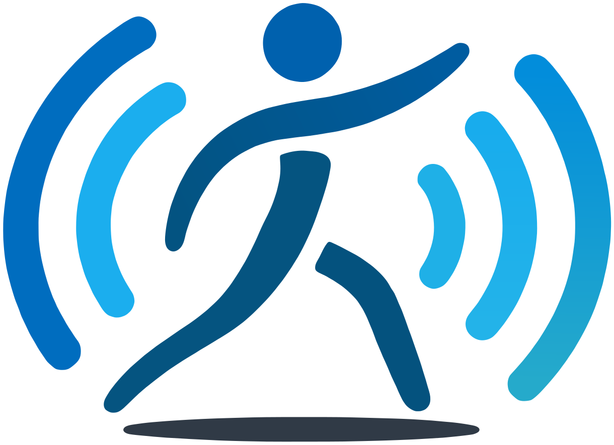

Agachamento
- Joelho cedendo para dentro
- Inclinação do tronco
- Simetria entre os joelhos
Exercício guiado por voz
O GuiaMove foi feito para pessoas cegas ou com baixa visão. Uma câmera acompanha o corpo e o sistema fala o que corrigir, sem que ninguém precise olhar para tela nenhuma.

É só ficar de pé diante do Kinect e falar.
Corpo inteiro no quadro, da cabeça aos pés. O sistema avisa se algo estiver cortado.
Ele confere o enquadramento, explica o exercício e começa.
A voz avisa na hora se o joelho ou o tronco saírem do lugar, e conta as repetições.
Sem sensores no corpo, sem Arduino, sem equipamento especial de academia. Só uma câmera, um computador e a voz.
O Kinect (ou uma webcam comum) enxerga a pessoa de corpo inteiro, de frente.
O MediaPipe Pose estima 33 pontos do corpo em tempo real, e o sistema calcula ângulos e desvios da postura.
Se o joelho cede para dentro ou o tronco inclina, uma voz avisa na hora. Ele também explica o exercício e conta as repetições.
Antes de começar, o sistema confere o enquadramento e diz se falta luz ou se a cabeça e os pés estão cortados.
Quem se exercita comanda o sistema falando, sem tocar em botão nenhum.
“Parar” funciona sempre, até no meio de uma fala do sistema. Quem acompanha vê tudo num painel no navegador: vídeo, um boneco 3D que espelha o movimento, indicadores de desvio e o histórico do que foi falado. Ao final, dá para salvar um relatório da sessão.
Hoje funciona melhor de frente para a câmera e com o corpo inteiro no quadro. Nos próximos passos: um painel pensado primeiro para leitor de tela, para a própria pessoa cega usar sozinha.
Orientação: Elisa Rennó C Dester
O código é aberto: github.com/TulioH4/GuiaMove.